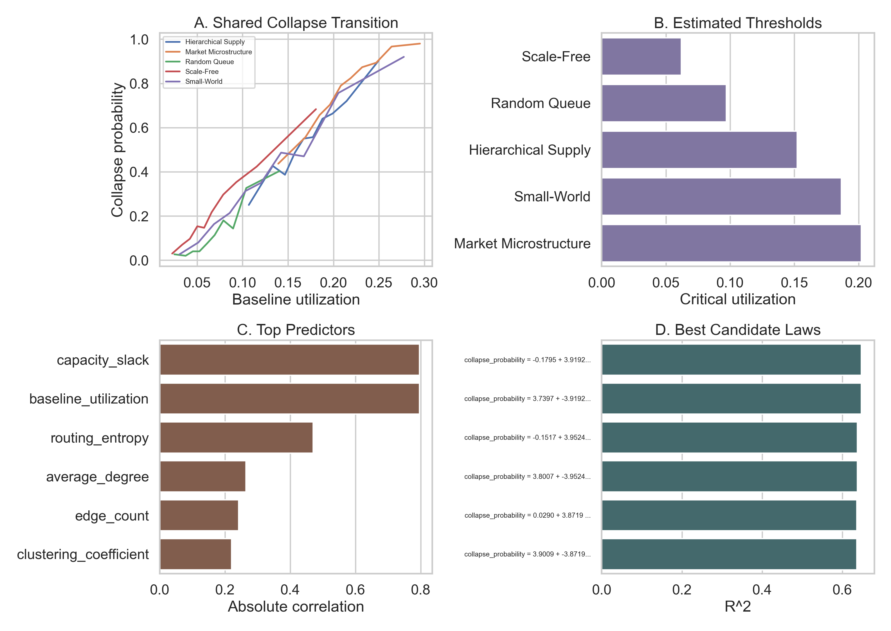

Utilization leads the collapse cliff.
StressLab is an open-source platform for testing, explaining, and discovering collapse behavior in queue, flow, and dependency networks. Its first flagship studies found that across domains, collapse thresholds are primarily utilization-led, while coupling mainly narrows the failure margin rather than moving the threshold much.

What was discovered
StressLab found evidence for a shared collapse-onset regime across random queue networks, scale-free networks, small-world networks, hierarchical supply networks, and market microstructure graphs. The cleanest cross-domain signal was utilization, not any single topology label.
The follow-up study sharpened the interpretation: coupling still matters, but it matters most by shrinking the shock margin to failure rather than by moving the threshold itself very far.
Why people should care
This turns resilience planning into a more tractable question. Instead of treating every system as a one-off story, teams can monitor distance to the utilization cliff, track shock margin, and look for shared warning signals such as variance growth and slower recovery.
StressLab packages that logic into a reproducible workflow with synthetic generation, stress search, theory analysis, reporting, and case-study storytelling.
Where to go next

Main Finding
See the cross-domain threshold result and the coupling refinement.

Static Demo
Use the GitHub Pages-friendly demo to explore preset scenarios without a backend.

Healthcare Case Study
Turn the abstract result into a concrete overload and intervention story.
Reproduce the studies
Use the exact manifests and commands that produced the flagship and follow-up packages.